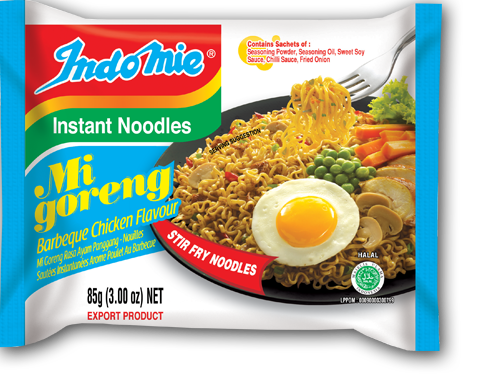
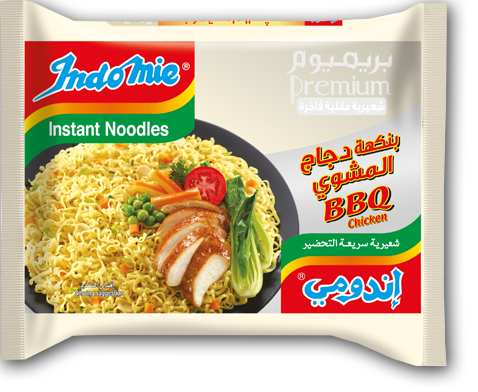
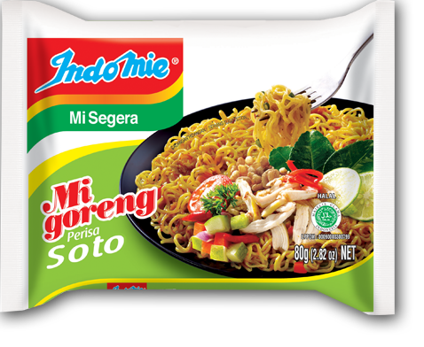
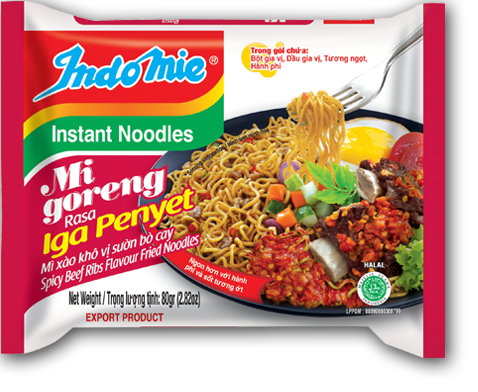
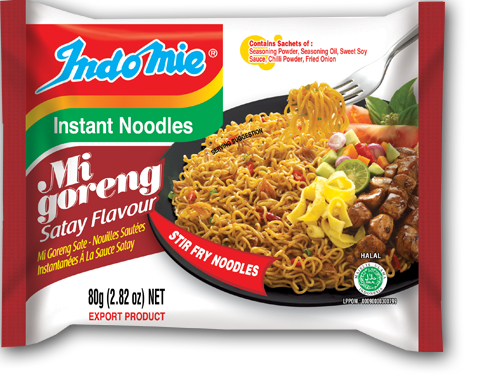
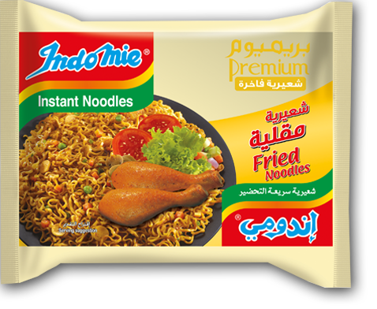

|
Indomie GorengDibuat dari tepung berkualitas tinggi serta bahan dan rempah segar pilihan, sepiring Indomie Mi Goreng pasti akan mencerahkan hari Anda. |
|  |
Indomie Goreng PedasBagi pecinta pedas, Indomie Mi Goreng Hot and Spicy menawarkan perpaduan sempurna antara bumbu, cabai, dan bawang goreng renyah yang akan menggugah selera dan menambah sensasi pedas di lidah Anda. |
|  |
Indomie Goreng Kriting Ayam BBQNikmati pengalaman baru menyantap mie kuah dengan pendamping rasa Indomie Curly Noodles BBQ Chicken. Dilengkapai dengan toping sayuran |
|  |
Indomie Goreng SotoIndomie Mi Goreng Soto adalah rasa pertama dan inovatif yang diadopsi dari masakan terkenal Indonesia Soto yang secara tradisional disajikan sebagai sup. Namun Soto Indomie Mi Goreng disajikan tanpa kuah dan tetap menikmati rasa Soto yang terkenal dengan sedikit aroma serai. |
|  |
Indomie Goreng Iga PenyetTerinspirasi dari iga sapi favorit Indonesia dengan hiasan cabai merah (Iga Penyet), rasa Indomie Mi Goreng Iga Penyet menawarkan aroma daging sapi panggang unik yang nikmat. |

|
Indomie Goreng RendangSalah satu sajian terpopuler dunia asal pulau Indonesia, Sumatera, kini hadir dalam sepiring Indomie Mi Goreng Rendang. |
|  |
Indomie Goreng SateRasa Sate Indomie Mi Goreng terinspirasi dari masakan ikonik Indonesia, Sate Ayam Saus Kacang. |
|  |
Indomie Goreng SpesialMie keriting merupakan bagian dari varian Indomie premium dengan tekstur tipis lebih lembut dan bentuk mie pipih. |

|
Indomie Goreng Cabe IjoRasa Indomie Mi Goreng Cabe Ijo menawarkan rasa pedas dan pedas dari cabai hijau segar yang berasal dari masakan terkenal Indonesia, sambal hijau terasi (Cabe Ijo). |